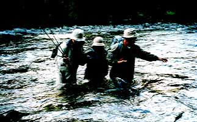

釣行日誌 ＮＺ編 「5000マイルを越えて」
午後、そして夕暮れ
1997/01/13(MON)-3
その後、数尾を目撃したものの、芳しい反応は得られず、ついに昼となってしまった。昨日、デビッドとビルに、私は左利きだからと頼んでおいたので、デビッドが気をきかしてロッドを振りやすい左岸側を釣り上がってくれている。（下流を向いて左が左岸）
大岩の後ろを通った流れが緩やかに曲がり、小さな石にぶつかっているポイントで、デビッドがまた１尾見つけた。そのブラウンは、しきりと体を左右に動かし、水中の餌を採っているようである。
「He is feeding.」
とデビッドが言う。ここでもセオリー通り、ロイヤルウルフの10番と12番、黒か茶色のパラシュート14番、ヘアーズイヤー14番、フェザントテール14番、カディスタイプの小さいの、などなど順番に流してみた。しかし、度重なる目撃のわりに釣れていないことのあせりが次第に私のキャストを不確実にしており、ほんの５ｍ向こうの鱒の鼻面にフライが落とせないのである。デビッドの声には「オーウ！」とか「チッ」とかが増えている。
おまけに私のキャスティングは、やや斜めに傾けてキャストする癖がついており、鉛線を巻き込んで重くなったニンフは、自分の意図しない見事なカーブキャストとなって鱒から大きく右方向に逸れてしまう。
魚の反応がない→焦る→キャストがうまく行かない→焦る→ますますうまく投げられなくなる....
という悪循環を経て、私の心理状態は最悪の所まで落ちこんんでしまっていた。10種類以上のフライを試し、数10回に及ぶ最低レベルのキャストの後、デビッドが、まああせらずに昼にしようかと言ってくれ、雨の中、雨具を着込んでの昼食となった。
原生林の大木の下でデビッドが携帯用ガスストーブを焚いて、インスタントラーメンを作ってくれる。一面の苔むした石に腰掛け、白い息をはきながら食べる雨中のラーメンと缶詰のサーディンが、あっと言う間に胃の中に落ちていく。
「大丈夫、あの魚は釣らせるよ」
そう言うデビッドの自信がどこから来るのかはわからないが、空腹がおさまるとともに、再びやる気と自信が湧いてきた。
「今度はこれを試してみよう」とデビッドが言って差し出したのは、クリケットと呼ばれるコオロギを模したフライであった。前部に茶色のハックルを巻き、ボディはエルクヘアーで巻いたボリューム感のあるフライである。
岩の後ろからそっと近づき、半分神頼みで投げる。鱒の前方に落ちたフライが彼の頭を通り越し、こりゃまたダメだわと思った所で不意に鱒が動き出し、大きく反転して頭を水面に出しながらゆっくりとフライをくわえた。
「ストライク！」
デビッドの大声を聞き、鱒が水中に沈んでから合わせをくれる。ロッドにずっしりと重量が載り、ラインが張りつめ、魚の振動が伝わる。デビッドが「やったぜ！」
と叫んで走り出してくる。いきなり下流に走り出した鱒を見てあわててラインを手繰り始めたとたん、フッとラインの力が無くなり、フライだけがむなしく宙を漂って手元に戻ってきた。
「！！？」
「くっそー！」
デビッドと顔を見合わせ、なんで今のははずれたの？という話になる。合わせが早かったのだろうか？ いや、あれで良かった。じゃあなんで？と聞くと、合わせの動作が小さすぎるとのこと。長年の積み重ねとは恐ろしいもので、ついつい日本の渓流における「竿先が30cm動けば良い」という手首だけの合わせをしてしまったのである。
デビッドは、ロッドをまっすぐ上に大きく上げ、同時にラインを右手でしっかりと引いて、確実に力強く合わせること！と言う。なるほど確かにそうである。あの魚体に鉤を刺すためには、そのぐらい力強い合わせがいるのだなと納得する。今から思えば、リールのドラグ調整を一番緩くしていたのにも原因があったといえる。
それにしても、この川のブラウントラウトのシビアな選択眼にはまったく恐れ入った。それまで投げた10種以上ものフライにはまったく見向きもしなかったのに、好きなパターンにはあっさりと食らいつくのである。単なるスレの度合いではなく、「セレクティブ」という言葉の意味が実感として肌に刷り込まれた。また、それまでに私の行ったキャストが鱒をおびやかせていたわけではないことに少々安心もした。
さて、また、遡って行こう。
午後になり、いささか集中力が欠けてきた。瀬尻に立って上流の水面を見つめると完全な逆光状態であり、きらめく波間に隠れて自分の投げたフライが全く見えない。淵の頭から続く深い瀬が広がる、絶好のポイントであろうが、繰り返すキャストはただの反復運動になってしまっていた。
突如、背後のデビッドが、
「ストラーイク！」
と叫ぶ。なんだ？と思う間もなく水面はまたもとのように逆光の中に波立っているだけである。すたすたとデビッドが降りてきて大きなジェスチャーで言う。「いいか、絶対に、絶対にフライから目を離すな。いいか、絶対にだぞ！」
うーん、わかりました、と言うしかない。彼の言葉の、「never,ever」が耳に残る。見にくいときに限って魚が出る、これはどこの国でも同じようであった。
悔しさを押しつぶしながら替わりのフライを巻いていると、瞬く間にサンドフライが両手に群がってくる。ウエストランド地方に多いこの虫は、日本のブヨをふた回り大きくしたぐらいで黒い色をしている。この虫のたちの悪いことと言ったらなんぼ書いても書き足りないのだが、蚊や虻のように肌を刺すのではなくアゴで思いっきり噛むのである。だから、なすがままにしておくと、たちまち噛まれた肌は血だらけになる。その上噛まれた傷がどうしようもなく痒くなる。ゆらゆらと目の前に泳ぐ何尾もの大物を見せられて、なりふりかまわず釣りに没頭してきた結果、私の両手の甲は無数の噛み傷でいっぱいになり、ステゴザウルスの表皮のようになってしまっていた。国産の虫避けクリームをいくら塗りたくってもまったく意に介せず、あくなき猛攻を繰り返すサンドフライには、ほとほと閉口した。この時から１カ月以上が経過した今も、私の手の甲にはサンドフライの噛み傷がしっかり残っているほどである。
午後３時頃になり、かなり上流まで遡ってきたようだ。右岸側は大きな淵が続いており、川沿いを遡行できそうにない。デビッドが岸辺の林の中を窺い、高巻きの読みをしている。結局、大木の根元から林の中にかき登り、数百メートルの薮漕ぎと高巻きをすることになる。薮の中を大股で歩くデビッドについて行くにはかなりの努力が必要である。竿先に注意しながら、原生林の中を右に左に歩いていく。
途中、いったん川原に降りることになり、デビッドの通り過ぎた後にふっと足を伸ばすと、足下の岩影から黒い大きな魚体が矢のように走り出して流心へと消えていった。驚きが半分、あきらめが半分で見送る。
午後５時近くになり、広い河原がまっすぐに続いている場所まで来ると、松延さん夫妻とビルが釣っているのに追いついた。ビルが奥さんにつきっきりで手ほどきしており、松延さんは後ろで静かに釣っている。果たして彼らの釣果は、如何に？
デビッドが林の近くに置いてあったキャンプ荷物を指さして言った。
「俺は、これからテントを張って今夜の支度をするから、君はこの近辺のめぼしいポイントをニンフで釣ってみな。ただし、ビル達を追い越して上に行かないようにな」
と、そう言われて岸辺に立つものの、上下流500ｍぐらいはザラ瀬ばかりであり、あまり釣れそうな予感はしなかった。おまけに、インジケーター無しのニンフの釣りには慣れておらず、16フィートの長いリーダーの先に付いたニンフに鱒が食いついているかどうかは、ガイドの指示が無い場合、私には全くわからない。
仕方がないので再び下流に下り、高巻きをして越えた淵まで行ってから、渦巻く流れにニンフを投げ込んでみるものの、むなしくラインが漂っているだけである。釣れそうな予感、釣れそうにない予感というのは、何がどうのというわけでもないのだがその日その時の自分の状態を支配してしまう。
いつまでもこうしていてもしょうがないので、えいやっとばかりに、持ってきた合成繊維の特大インジケーターを付けることにする。オレンジ色の派手なインジケーターを２cmほどリーダーに結びつけ、再び淵の上手の逆巻く流れに投げ込む。
もしここでインジケーターが止まったりして魚を掛けたらどうやって取り込もうか？ などとあてのない期待を膨らませてみるものの、その期待は増水したマウンテンリバーの茶色がかった流れにすべて押し流されてしまうのであった。
そうして20分ほどその淵で過ごし、ヤハリ釣レナイナ...とあきらめ、また上流へ向かい松延さん達に追いつくことにする。15分ほど歩いて追いついてみると、奥さんとビルが大岩のぶつかりの下の淵で、おそらく１尾見つけたのだろう、しきりとキャストを繰り返している。10回ほどのキャストの後、反応が無かったのか二人はその魚をあきらめ、上流へ移動する。あとから来た松延さんが、ニンフをその大岩のポイントへ投げている。三投めぐらいで、松延さんが、
「おっ！」
というアクションで合わせをくれたが鱒は掛からなかったようだ。遠くから見ていても彼の残念さが良くわかり、同情したくなってきた。
奥さんはと見ると、ザラ瀬が広く一面に広がったポイントで、上流に向かいニンフを投げているようである。と、見る間に彼女のロッドが大きくしなり、かなりの圧力が下流へと動き出した。やった！と思い見ていると、突然その圧力の主が空中へとジャンプした！
「うわーっ、本当にこの川のブラウンはジャンプするんだァ！」
とあっけにとられる。奥さんは必死にロッドを立ててこらえている。あわててカメラを取り出し、彼女のファイトを写す。その数秒間に強い嫉妬が心をよぎる。下流へとひた走ったその鱒が、もう一回ジャンプを試みると、するりとフックが外れて圧力と緊張とが一瞬で失われてしまった。私はからくも逃げ去ったその鱒以上に安堵を感じた。
午後７時近くなり、その日の釣りは切り上げということで、対岸からビルと松延さん夫妻の３人が、スクラムを組んで川を渉って来る。上流側にビル、下流側に松延さんを配し、奥さんがほとんど腰上まで浸かって川を渉る。この根性は見上げたものである。

「おつかれさまでしたぁ！」
「どうでしたか？」
「いやあ、たくさん魚はいたけど、１尾バラしただけでした」
「私たちも大変でしたよ」
などと話しつつ、デビッドの待つテントサイトに帰ってみると、彼は３張りのテントを張り終え、コンロに夕食の準備を整えてみんなを迎えてくれた。ビルが、
「お前はどうだった？」
と聞くので、
「うーん。いっぱいいたけど喰いが渋かったみたいで１尾掛けただけでした」
などともっともらしい敗戦の弁を並べた。聞くと、松延さん夫妻も今日は坊主とのこと。ヤレヤレ。こうしてマウンテンリバーの初日は３人とも坊主のまま、明日の健闘を誓って竿を納めたのである。
今夜の夕食は、ビーフのソーセージとスープ。このスープは昨夜もロッジでいただいたがとてもおいしい。聞くと、パッケージ入りの粉末タイプとのことであるが、具がたくさんなのと疲れていることを割り引いてもいい味であった。時刻は夜の９時過ぎであるが、まだまだあたりは明るい。
焚き火の回りには、どこからともなくブッシュロビン（薮駒鳥）が現れて私たちの足下、手の届きそうな所まで近づいてくる。
ビルの言うには、この鳥は人に集まってくるサンドフライを食べに来るのだそうで、人は恐れないとのこと。ちょこちょこと、愛くるしい姿をそこここに見せては隠れている。思いっきりサンドフライを食べ尽くして欲しいと心より願う。
松延さん夫妻は、昨年の苦い経験を元に、薄手の手袋をはめている。指先だけは出してあり、サンドフライの猛攻を防ぎつつ釣りには不自由しない。釣具屋で買った手袋から自分たちで工夫して作ってきたそうである。私も次に来るときはぜひ準備しようと心に誓う。経験は最良の教師だが、授業料は高いのであった。
夕食を済ませ、満ち足りた気持ちでキャンプの焚き火を見つめる。貴重な時間が、ゆっくりと流れてゆく。
水を飲みに河原に降りると、木立の合間から、満天の星が見える。デビッドが、南十字星を教えてくれる。漆黒の夜空に天の川が広がってゆく。
テントに入り、天井にびっしり張り付いたサンドフライを無視して眠りにつく。暗闇ではサンドフライはじっとしているらしい。
シュラフの中で、
「とうとう今日は一尾も釣れなかった。うーん、まぁ、一日目だからなあ」
と自分を納得させる心の片隅で、父の持論の一言がむくむくと起きあがる。
「釣りの肝心な点はなァ、よーく落ちついて、準備万端整えて、一日の最初のアタリを、確実に釣り上げることだよ。それをしくじると、後の一日じゅううまくいかんようになる」
今日のファーストストライクは、合わせに失敗しリールを鳴らしただけで去っていった。明日はどうなることやら。
釣行日誌ＮＺ編 目次へ
サイトマップ
ホームへ
お問い合わせ